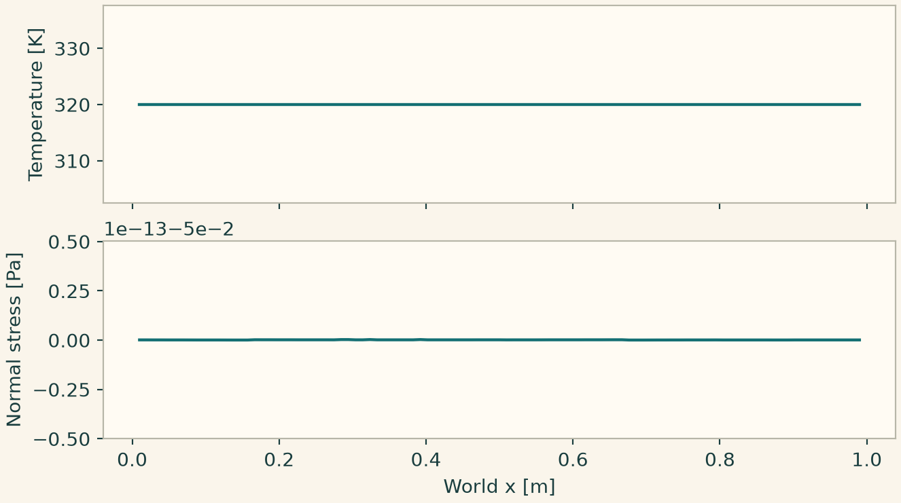

Docs › Build a first case in each physics package › Multiphysics
5.13 Multiphysics
onesim.physics.multiphysics
Use HeatedResistor, FluidColumnPiston, VoiceCoil, ThermalExchange or AdiabaticReaction for a packaged lumped balance. These models expose typed states and inputs. For example, a voice coil couples electrical current to force and mechanical velocity to back electromotive force. Initialize current, displacement and velocity, and plot all three against time. For thermal exchange with zero external power, check constancy of \(C_1T_1+C_2T_2\) and the exponential decay of \(T_1-T_2\).
For independently declared physics, compose a Problem with both models, attach conditions to their owners and connect typed fields via FieldCoupling. Select each mesh and Numerics by model identity. The physical link specifies what is transmitted. The numerical transfer specifies how to represent it on the target support. A coupling strategy specifies when to solve each block. For thermoelasticity, use thermal temperature as the source and the elastic model's temperature input as the target, with FiniteElementEvaluation() to evaluate at mechanical quadrature points. Enable IsotropicThermalExpansion(reference_temperature=...) in the elastic model. test_fe_thermoelastic_coupling.py checks free expansion and restrained thermal stress. The electrothermal, thermomechanical, fluid–structure and general coupled service exports carry separate configuration and provider contracts.
5.13.1 Transfer a temperature to mechanical quadrature
This stationary test holds the faces at a uniform temperature above the stress-free reference and clamps all displacement components. The expected normal stress is \(-E\alpha\Delta T/(1-2\nu)\). The separate FE spaces share a mesh here. The coupling still evaluates the thermal field on the receiver's quadrature rather than copying coefficients.
import numpy as np
from onesim.cad.d3 import Box
from onesim.materials import IsotropicSolid
from onesim.meshing import StructuredTetrahedralMesher
from onesim.numerics import Numerics
from onesim.numerics.fem import FiniteElement, Lagrange
from onesim.numerics.field_transfer import FiniteElementEvaluation
from onesim.numerics.linear import SparseDirect
from onesim.physics.heat_transfer import FixedTemperature, HeatConduction
from onesim.physics.solid_mechanics import (
FixedDisplacement, IsotropicThermalExpansion, LinearElasticity,
)
from onesim.simulation import Problem, Simulation
from onesim.simulation.field_connections import FieldCoupling
box = Box(length=1, width=1, height=1)
mesh = StructuredTetrahedralMesher(cells=(2, 2, 2)).generate(box)
E, nu, alpha = 100.0, 0.3, 1e-5 # Pa, 1, 1/K
T_ref, T_wall = 300.0, 320.0
material = IsotropicSolid(
density=1, specific_heat_capacity=1, thermal_conductivity=1,
youngs_modulus=E, poisson_ratio=nu, thermal_expansion_coefficient=alpha,
)
heat = HeatConduction(domain=box.volume, material=material)
solid = LinearElasticity(
domain=box.volume, material=material,
thermal_strain=IsotropicThermalExpansion(reference_temperature=T_ref),
)
problem = Problem(
name="Constrained heating", geometry=box, physics=(heat, solid),
boundary_conditions=(
FixedTemperature(boundary=box.boundaries.all, physics=heat, value=T_wall),
FixedDisplacement(boundary=box.boundaries.all, physics=solid, value=(0, 0, 0)),
),
couplings=(FieldCoupling(
source=heat.temperature, target=solid.temperature,
transfer=FiniteElementEvaluation(),
),),
)
sim = Simulation(
problem=problem, mesh={heat: mesh, solid: mesh},
numerics={
m: Numerics(spatial=FiniteElement(element=Lagrange(order=p)),
linear_solver=SparseDirect())
for m, p in ((heat, 1), (solid, 2))
},
)
sim.validate().require_valid()
result = sim.solve_stationary()
point = [[0.2, 0.3, 0.4]]
expected = -E * alpha * (T_wall - T_ref) / (1 - 2*nu)
np.testing.assert_allclose(result.field(heat.temperature).evaluate(point), [T_wall])
np.testing.assert_allclose(result.field(solid.displacement).evaluate(point), [[0, 0, 0]],
atol=1e-12)
sigma = result.field(solid.stress).evaluate(point)[0]
np.testing.assert_allclose(sigma, [expected]*3 + [0]*3, atol=1e-10)
import matplotlib.pyplot as plt
import onesimulation_plot_theme as theme
x = np.linspace(.01,.99,101)
points = np.column_stack((x,np.full_like(x,.3),np.full_like(x,.4)))
temperature = result.field(heat.temperature).evaluate(points)
normal_stress = result.field(solid.stress).evaluate(points)[:,0]
theme.use_theme()
fig,(a,b)=plt.subplots(2,1,sharex=True,figsize=(6.8,3.8),layout="constrained")
a.plot(x,temperature);a.set_ylabel("Temperature [K]")
b.plot(x,normal_stress);b.set(xlabel="World x [m]",ylabel="Normal stress [Pa]")
plt.show()

The low modulus makes this a simple manufactured balance in SI units. To build a free-expansion variant, change the supports to remove rigid-body motion while allowing thermal expansion. Then check displacement and stress against the corresponding physical reference.